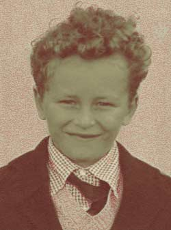

|  | This image started as a black and white print and was scanned as greyscale.I used a filter called 'Photocopy' on a duplicate layer and then erased some areas of that filtered layer. I could never get that tie right! |
| One of those school photos. . | I think I was about 6 |
|
Click
over the image to go back to the thumbnails
|
|
| Chris Jennings - Self Portrait |
Last
updated:
|